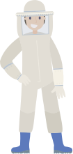

Bee Background Basics
Though the honey bee is native to Europe, Western Asia, and Africa, they are found all over the world. Honey bees exist on every continent except for Antarctica, because it is too cold with too few resources for them to survive.
This species, Apis mellifera, is commonly referred to as 'honey bee', but they are also frequently called 'Western honey bee' and 'European honey bee'.
Honey bees were one of the first species to be domesticated by humans, almost 10,000 years ago! Pottery was used for beekeeping in Africa about 9,000 years ago, and depictions of beekeeping are also present in Egyption art from nearly 4,500 years ago. Some jars of honey were even found in the tomb of Egyptian pharoah, Tutankhamun!

Habitat
Honey bees are perfectly happy to live anywhere with an adequate supply of resources. They require a large amount of flowering plants, water, and shelter. Honey bees also prefer to create their hives in a space like a hollow tree or other cavity.
Meadows, forests, gardens, wetlands, grasslands, and even deserts can all support honey bee life so long as sufficient resources are available.

Honey bees can live in urban areas as well. Sometimes they choose do this naturally, but beekeepers will also encourage them to settle in areas they wouldn't normally by providing them with man-made hives to live in and lots of pollen to feed on.
Some beekeepers will wear special suits so that the bees won't sting them if they get agitated. But most of the time, this isn't a problem.
If you happen to find a beehive in a place where it doesn't belong, like in your shed or garage, don't destroy it! Call a beekeeper so that they can safely move it!

Bees in the Hive
There are three different types of honey bees in a hive. The Queen, Workers, and Drones. Each one is a different size, has a different lifespan, and has a different set of jobs inside and outside of the hive.
NOTE: These bees are proportionately correct in size.
Queen

Queen
There is usually only one queen in a hive. The queen is the only bee that is able to lay eggs, and the survival of the bee colony is dependent on her survival and reproductive ability.
The queen will lay eggs almost every day throughout the year, except for exceptionally cold days. Some queens are able to lay about 1,000 eggs every day, making that about 200,000 eggs over the course of her life.
As the queen lays eggs, she is able to decide which eggs will be fertilized and which will not. The eggs that are fertilized will develop as females, making them either worker bees or new queens (this is dependent on how they are fed, which we will look at later). Eggs that are not fertilized will be male, making them drones.
Worker
The worker bees are all female. They take care of just about everything in the hive, from food gathering to caring for the developing bees. In fact, their responsibilities change as they get older.
Young worker bees will clean cells for eggs to be laid or for food to be stored. When they are a few days older they will take care of more janitorial duties like removing waste from the hive, keeping the air flowing with their wings, processing nectar brought in by foraging workers (turning it into honey), and feeding the queen and larvae. In their second week, workers are able to produce wax and they work to repair any problems with the comb or add new sections if necessary. They will also continue to feed the queen and other workers.
Drone
Drones are the only male honey bees in the hive. They do not take care of the hive at all and do not go out to gather food. Their primary purpose is to mate with the queen so more bees can be produced.
During the spring and summer, drones will leave the hive and gather in "assembly areas" in the vicinity. Queens will fly through these assembly areas and attract the drones with their pheromones. The drones will attempt to mate with the queen. If they are successful, they die.
Development
The development and life of honey bees are dependent upon their hive. The hive is made out of wax, which is produced by the bees. In the hive are hexagonal cells, also made out of wax, and this is where eggs are laid and honey is stored.
Bees have four stages to their life cycle and three of those stages happen inside a single cell of the hive.
Honey bees communicate in a number of different ways, using their senses of smell, sight, and sound. Their forms of communication are actually rather complex and still being heavily studied by scientists today.
Smell
The majority of the communication in a hive happens through chemical scents, sometimes called pheromones. Each hive has its own unique chemical scent, meaning that no two bee hives will smell exactly the same. All of the bees that belong to a particular hive also have that scent, so they are able to recognize friendly bees and foreign bees.
As all of the bees in a hive interact, they pass their pheromones between one another and gather information about the state of the hive. Their pheromones can indicate if the queen is healthy, if the rest of the bees are healthy, and if things are going well or bad.
A honey bee's sense of smell is also important to determining where the next source of food is. If a worker finds a flower good source of food while foraging, when she comes back to the hive, the other workers will smell her and get the scent profile of the new food source. They will be able to use their incredible sense of smell to find their way to that food and bring back more for the hive.
Sight
Even though it is always dark inside of a bee hive, sight is still very important to honey bees for a variety of reasons.
Sight allows them to spot creatures in their surroundings and flowers that could be a good source of pollen or nectar. Additionally, the eyes of bees allow them to see ultraviolet light. This ability allows them to find the position of the sun on days that are cloudy and see markings on flowers that are invisible to humans.

Dancing
One of the more fun and unique aspects of bee communication is their dancing signals. Though it isn't dancing like we humans would consider, it is still a unique trait to bees and very uncommon among other insects.
One of these dances is the "round dance". The round dance signals that food has been located within around 300 meters of the hive, but does not communicate the specific direction of the food.
The more complex "waggle dance" indicates that there is food further than 300 meters away from the hive. This dance is interesting because it allows a bee to communicate the precise distance it traveled to get to the food source and shows what direction other bees would need to fly relative to the position of the sun in the sky. Impressive!
As workers find these blooming flowers, they use their special tongues to suck out the nectar and store it in a portion of their digestive tract, which they will regurgitate later. The pollen from the flowers is collected by the bee's body hair and then transferred to a special area on their hind legs called the "pollen baskets".
When workers return to the hive after foraging, they have two things they can do with the nectar they've stored in their bodies. They can either transfer it to younger workers so that they can feed the developing larvae, or they can turn it into honey for long term food storage.

When young workers consume nectar or pollen, they eventually turn it into either "royal jelly" or "worker jelly". These types of jelly are given to larvae. If a larvae is given a large amount of royal jelly, it will turn into a queen bee. If it is given a lot of worker jelly, it will turn into a worker bee.